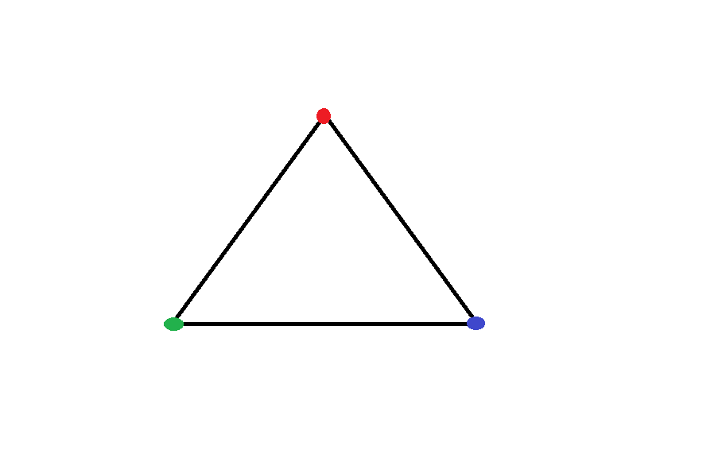

Overview
In this project, I implemented a series of graphics techniques. Starting with basic rasterizing and rendering of triangles, and finishing with supersampling and texture mapping. I didn't fully realize the mathematical intensity that computer graphics requires, and I have a newfound respect for it.
Section I: Rasterization
Part 1: Rasterizing single-color triangles
Rasterizing a triangle given by 3 vertices is done by first finding the bounds of the box that contains the triangle. Find the smallest x and y values in each vertex, then find the largest x and y values in each vertex. This ensures that we arent checking a point that is too far away from the triangle. Looping through each x an y value in the box, we check if that pixel center (center is x + 0.5, y + 0.5) is inside the triangle. This is done by performing three line tests and determining if all three of the test values are either less than zero, or at least zero. If one of the values has a different sign than the rest, then that point is outside the triangle. If the pixel is in the triangle, then we add its color to the framebuffer at that point. If it is not, then a default color (white in this case) is added instead.
Part 2: Antialiasing triangles
Supersampling is accomplished by modifying the existing rasterization algorithm. Each pixel is sectioned into a 2d grid with height of sqrt(sample_rate), and width of sqrt(sample_rate). A sample rate of 4, for example, would result in a 2x2 grid. The center of each subpixel is (x + ((1 + 2i) / 2 * sqrt(sample_rate)), y + ((1 + 2j) / 2 * sqrt(sample_rate))) for i,j being the coordinates for the subpixel grid. For each one of those subpixels, we perform the three line tests, and if it is inside, then we add it's color to a seperate accumulation buffer that is of size width * height * sample_rate. If it is not, then we add the default color (white). Once we have finished rasterizing, we must resolve the frame buffer. For each pixel, we must take the average color value of its subpixels in order to determine the proper color for the pixel. Once that average is determined, we insert it into the frame buffer. This is called downsampling. Supersampling is an important tool to deal with aliasing. By taking the average value of each fraction of the pixel, we can smooth out the transitions on edges. As can be seen in these pictures, the supersampling is smoothing in the edges and gaps that can show up.

|
|
Part 3: Transforms
Cubeman is jumping in the air.
Section II: Sampling
Part 4: Barycentric coordinates
Barycentric coordinates are coordinates (alpha, beta, epsilon) that weight each vertex of the triangle in relation to the given (x,y) point. If the point is inside the triangle, then each barycentric coordinates will have the same sign. Furthermore, the weights assigned to each vertex are influenced by the proximity to the point. If the point was on the red vertex, then the weights would be (1,0,0), and if it was in the middle, then the weights would be (1/3, 1/3, 1/3). By assigning a color value to each vertex, we can interpolate colors accross the triangle with the weights given for each (x,y) pixel by barycentric coordinates.
|  |

|
Part 5: "Pixel sampling" for texture mapping
Pixel sampling is done by taking a pixel at point (x,y) on the screen and mapping it to a texture pixel at point (u,v). This is done with barycentric coordinates. The texture point (u,v) is calculated by weighting the three vertices that make up the triangle with the barycentric coordinates: (u,v) = alpha * A_uv + beta * B_uv + epsilon * C_uv. Programatically, I did this for every subpixel. The resulting (u,v) is scaled up by the height, weight of the texture image (i.e u * width, and v * height). In the case of nearest pixel sampling, the point is rounded to the nearest discrete point, and the color at that point on the texture image is put into the supersampled buffer. In the case for bilinear sampling, you floor to the nearest point, and then using the nearest point and the difference between it and the original point's horizontal value (call this difference s), you perform two linear interpolations on (u,v) and its neighbors (u+1,v), (u,v+1), (u+1,v+1). Finally you perform one last linear interpolation using the results from the two previous linear interpolations, and the vertical difference between the nearest point and the original points vertical value.
Bilinear sampling really shows when the image is zoomed out a lot. In that scenario, nearest neighbor suffers from aliasing.
Part 6: "Level sampling" with mipmaps for texture mapping
Points in an image that are farther away from nearer points suffer from aliasing easier than the nearer points. Rendering the texture at different levels of zoom (resolution) and then picking the best one to sample from based on where the pixel is, will mitigate this issue. Sampling done in the previous step was done at level 0 (just one texture map). This time we will use multiple levels, and as such, we must calculate the level for each point. This is done by implementing the level formula from lecture. If we are doing nearest level, then the closest valid level is used (i.e rounding) for that point. If we are using linear levels, then we take the bilinear sampling from both the floor of the calculated level and the ceiling of the level (D and D+1), before returning the linear combination of them weighted with the difference of (level - floor(level)) and (ceil(level) - level).